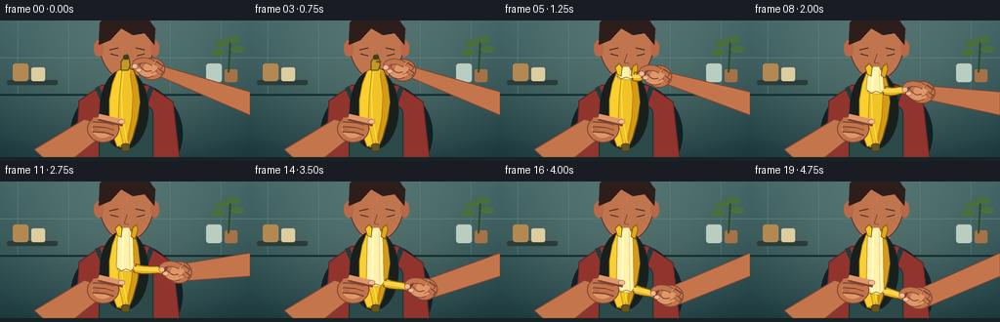
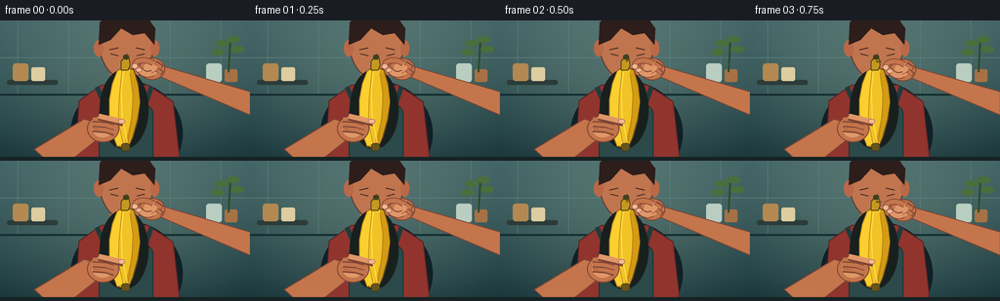

CODING AGENTS AS PIXEL WORLD MODELS
traex/GPT-5.6-Sol · motion_rationality_0007
点击播放 · 原生 RGB 像素
逐轮保存的候选
回放视频、检查图与代码变化。
每份候选均可单独播放。实际图片检查记录在下方工具轨迹中。
候选 01播放与检查图
点击播放 · 原生 RGB 像素


展开代码变化
--- 上一保存版本
+++ 本次保存版本
@@ -0,0 +1,211 @@
+from pathlib import Path
+import math
+import numpy as np
+from PIL import Image, ImageDraw, ImageFilter
+import artifact_io
+
+W,H,N = 256,144,20
+S=4
+
+def sc(v): return int(round(v*S))
+def P(points): return [(sc(x),sc(y)) for x,y in points]
+def ease(x):
+ x=max(0,min(1,x)); return x*x*(3-2*x)
+def bezier(p0,p1,p2,p3,n=30):
+ out=[]
+ for i in range(n):
+ t=i/(n-1); u=1-t
+ out.append((u**3*p0[0]+3*u*u*t*p1[0]+3*u*t*t*p2[0]+t**3*p3[0],
+ u**3*p0[1]+3*u*u*t*p1[1]+3*u*t*t*p2[1]+t**3*p3[1]))
+ return out
+
+def poly(draw, pts, fill, outline=None, width=1):
+ draw.polygon(P(pts), fill=fill)
+ if outline: draw.line(P(pts+[pts[0]]), fill=outline, width=sc(width), joint='curve')
+def ell(draw, box, fill, outline=None, width=1):
+ draw.ellipse(tuple(sc(v) for v in box), fill=fill, outline=outline, width=sc(width) if outline else 1)
+def line(draw, pts, fill, width, joint='curve'):
+ draw.line(P(pts), fill=fill, width=sc(width), joint=joint)
+def rounded(draw, box, radius, fill, outline=None, width=1):
+ draw.rounded_rectangle(tuple(sc(v) for v in box), radius=sc(radius), fill=fill, outline=outline, width=sc(width))
+
+def ribbon_polygon(curve, widths):
+ # normals around a centerline, width in logical pixels
+ left=[]; right=[]
+ for i,(x,y) in enumerate(curve):
+ a=curve[max(0,i-1)]; b=curve[min(len(curve)-1,i+1)]
+ dx=b[0]-a[0]; dy=b[1]-a[1]; L=max(.001,math.hypot(dx,dy))
+ nx=-dy/L; ny=dx/L; ww=widths[i]/2
+ left.append((x+nx*ww,y+ny*ww)); right.append((x-nx*ww,y-ny*ww))
+ return left+right[::-1]
+
+def skin_gradient(base=(199,120,78)):
+ return base
+
+# static textured kitchen background at high resolution
+frames=[]
+for fi in range(N):
+ t=fi/(N-1)
+ # action begins gently after the first frame
+ p=ease(max(0,(t-0.10)/0.82))
+ stem_p=ease(max(0,(t-0.05)/0.22))
+ yy,xx=np.mgrid[0:H*S,0:W*S]
+ # warm, softly vignetted teal kitchen
+ top=np.array([79,111,111.],float); bot=np.array([38,67,70.],float)
+ a=(yy/(H*S-1))[...,None]
+ arr=top*(1-a)+bot*a
+ glow=np.exp(-(((xx-128*S)/(115*S))**2+((yy-58*S)/(95*S))**2))[...,None]
+ arr += glow*np.array([18,17,12.])
+ vign=np.clip(((xx-128*S)/(190*S))**2+((yy-75*S)/(115*S))**2,0,1)[...,None]
+ arr -= vign*np.array([14,14,11.])
+ im=Image.fromarray(np.uint8(np.clip(arr,0,255)),'RGB')
+ d=ImageDraw.Draw(im)
+ # backsplash tile seams and counters
+ for x in [18,70,122,174,226]: line(d,[(x,0),(x,76)],(96,132,130),.55)
+ line(d,[(0,38),(256,38)],(103,139,136),.55)
+ line(d,[(0,76),(256,76)],(25,49,52),2)
+ rounded(d,(7,61,59,66),2,(47,63,60))
+ # soft shelves / jars
+ rounded(d,(13,44,29,62),3,(178,137,83)); rounded(d,(32,48,46,62),2,(218,203,159))
+ rounded(d,(211,44,227,63),3,(184,204,190)); rounded(d,(230,50,243,63),2,(165,115,71))
+ # out-of-focus plant
+ line(d,[(234,53),(236,20)],(49,77,47),2)
+ for bx,by,ang in [(228,23,0),(240,19,0),(224,32,0),(244,29,0)]:
+ ell(d,(bx-8,by-3,bx+6,by+4),(76,111,63))
+ # Person torso, head and attentive face (background)
+ # shirt shadow then torso
+ ell(d,(72,62,187,170),(21,36,42))
+ poly(d,[(77,144),(81,82),(104,66),(151,66),(177,83),(184,144)],(145,55,49),(89,39,39),1)
+ # apron panel and straps
+ line(d,[(99,68),(110,94)],(36,61,63),5); line(d,[(155,68),(146,94)],(36,61,63),5)
+ rounded(d,(101,86,157,150),10,(47,76,76),(31,54,56),1)
+ # neck, head, hair
+ rounded(d,(113,45,143,75),9,(181,105,72))
+ ell(d,(101,-19,158,61),(190,118,81),(90,54,46),1)
+ # ears and hair cap
+ ell(d,(96,20,106,37),(184,106,74)); ell(d,(154,20,163,37),(184,106,74))
+ poly(d,[(101,25),(102,2),(112,-8),(149,-5),(159,8),(158,25),(148,13),(136,15),(124,8),(113,20)],(48,34,32))
+ # eyebrows, downward eyes, nose, mouth
+ line(d,[(112,30),(121,28)],(74,44,37),1.3); line(d,[(139,28),(148,30)],(74,44,37),1.3)
+ line(d,[(113,34),(121,36)],(48,35,31),1.1); line(d,[(140,36),(148,34)],(48,35,31),1.1)
+ line(d,[(130,34),(127,43),(132,44)],(138,77,58),1)
+ line(d,[(122,50),(130,52),(138,49)],(107,55,48),1.2)
+
+ # movement values and hand positions
+ # strip free-tip / pinch: out first, then down and back inward
+ gx = 140 + 25*math.sin(p*math.pi*0.82) + 4*p
+ gy = 48 + 70*p
+ attach_y = 50 + 62*p
+ attach_x = 136 + 2*math.sin(p*2.2)
+ # tiny breathing, no camera instability
+ bob=0.45*math.sin(t*math.pi*2)
+ gy+=bob; attach_y+=bob
+
+ skin=(194,118,78); skin_light=(221,151,105); skin_dark=(125,70,54); nail=(239,184,150)
+ # Arms behind object: left support arm; right forearm follows pulling hand
+ poly(d,[(48,144),(35,132),(86,101),(103,106),(101,121),(72,144)],skin,skin_dark,1)
+ # right forearm is a tapered quadrilateral toward wrist near grip
+ wx,wy=gx+15,gy+1
+ poly(d,[(256,73),(256,97),(wx+10,wy+9),(wx-4,wy-7)],skin,skin_dark,1)
+ # shadows beneath hands / banana
+ ell(d,(102,50,152,132),(28,36,34))
+
+ # BANANA lower silhouette; stable gentle curve
+ outer=[(128,47),(137,51),(141,65),(143,83),(141,101),(136,119),(130,132),
+ (120,129),(115,116),(112,98),(112,81),(115,65),(120,52)]
+ poly(d,outer,(238,193,42),(111,82,23),1.25)
+ # left rind modelling / green base
+ poly(d,[(120,52),(125,49),(122,79),(121,103),(126,127),(120,129),(115,116),(112,98),(112,81),(115,65)],
+ (246,205,50),(185,135,25),.65)
+ # right warm side shading
+ poly(d,[(133,50),(137,53),(141,67),(143,84),(140,102),(135,120),(131,130),(128,126),(134,102),(136,80)],
+ (210,155,25))
+ # subtle ridges
+ line(d,[(126,53),(124,72),(125,99),(130,125)],(255,222,80),1)
+ line(d,[(133,54),(136,76),(135,99),(131,124)],(177,124,20),.7)
+ # bottom nub
+ rounded(d,(124,126,133,134),3,(103,87,33),(66,58,28),.7)
+
+ # exposed fruit overlays upper banana as peel travels downward
+ if p>0.015:
+ yb=attach_y
+ fruit=[(126,47),(132,47),(136,56),(137,yb-1),(134,yb+4),(121,yb+3),(119,yb-1),(120,58)]
+ poly(d,fruit,(255,239,172),(172,139,69),.8)
+ # fruit longitudinal soft highlights
+ line(d,[(126,51),(125, yb+1)],(255,249,204),1.6)
+ line(d,[(132,51),(133, yb+1)],(225,202,129),.8)
+ # ragged rind boundary
+ line(d,[(120,yb),(124,yb+3),(129,yb+1),(134,yb+3),(137,yb)],(170,121,23),1)
+
+ # stem changes from upright to snapped outward
+ if p<.06:
+ stem_t=stem_p
+ tipx=130+9*stem_t; tipy=39+6*stem_t
+ poly(d,[(124,51),(124,42),(128,37),(132,39),(133,46),(131,51)],(194,153,36),(85,70,26),1)
+ rounded(d,(126,35,132,40),2,(67,68,32))
+ if stem_t>.15: line(d,[(129,42),(tipx,tipy)],(117,84,28),2)
+ else:
+ # small split crown visible above fruit
+ poly(d,[(120,55),(118,48),(122,44),(125,48),(124,57)],(244,201,43),(121,84,20),.8)
+ poly(d,[(134,56),(136,47),(140,44),(141,50),(138,59)],(221,168,28),(121,84,20),.8)
+
+ # active peeled ribbon from moving boundary to pinched old top
+ if p>.025:
+ c=bezier((attach_x,attach_y),(149,attach_y+4),(gx-8,gy-3),(gx,gy),36)
+ widths=[8.5-2*(i/(len(c)-1)) for i in range(len(c))]
+ rp=ribbon_polygon(c,widths)
+ poly(d,rp,(232,177,30),(116,78,20),.9)
+ # pale inner face stripe
+ ci=bezier((attach_x-1,attach_y),(149,attach_y+2),(gx-8,gy-3),(gx,gy),30)
+ line(d,ci,(255,222,100),3.6)
+ line(d,ci,(244,203,65),1.2)
+ # dark end at pinched tip
+ ell(d,(gx-2.2,gy-2,gx+2.5,gy+2.5),(91,70,28))
+
+ # LEFT supporting hand, palm and fingers wrap around lower fruit
+ ell(d,(89,97,122,125),skin,skin_dark,1)
+ # palm highlight
+ ell(d,(94,100,116,120),skin_light)
+ # rear fingers around far side
+ for off in [0,5,10]:
+ line(d,[(95,102+off),(108,103+off),(117,106+off)],skin_dark,5.2)
+ line(d,[(95,101+off),(108,102+off),(118,105+off)],skin,4.0)
+ # foreground thumb across banana
+ line(d,[(101,99),(114,102),(126,105)],skin_dark,7)
+ line(d,[(101,98),(114,101),(126,104)],skin_light,5.3)
+ ell(d,(121,101,128,106),nail,(150,91,66),.5)
+ # knuckle creases
+ line(d,[(94,110),(101,112)],(153,84,63),.7)
+
+ # RIGHT palm, dynamically oriented around grip
+ # palm is to the right of pinch point
+ px,py=gx+14,gy+1
+ ell(d,(px-12,py-11,px+15,py+12),skin,skin_dark,1)
+ ell(d,(px-7,py-7,px+9,py+7),skin_light)
+ # index finger curls from palm above onto grip
+ idx_curve=bezier((px+3,py-5),(px-5,py-11),(gx-5,gy-7),(gx-1,gy-1),18)
+ line(d,idx_curve,skin_dark,6.2); line(d,idx_curve,skin,4.8)
+ # thumb comes from below and pinches free tip
+ th_curve=bezier((px+2,py+5),(px-5,py+8),(gx+6,gy+6),(gx+1,gy+1),18)
+ line(d,th_curve,skin_dark,7); line(d,th_curve,skin_light,5.3)
+ # folded other fingers near palm
+ line(d,[(px+5,py-6),(px+12,py-1)],skin_dark,5); line(d,[(px+5,py-5),(px+11,py-1)],skin,3.6)
+ line(d,[(px+6,py+1),(px+12,py+5)],skin_dark,5); line(d,[(px+6,py+1),(px+11,py+5)],skin,3.6)
+ # nails at pinch points
+ ell(d,(gx-5,gy-4,gx+1,gy+1.5),nail,(146,86,65),.5)
+ ell(d,(gx-1,gy+0.5,gx+5,gy+5),nail,(146,86,65),.5)
+ # hand crease
+ line(d,[(px+1,py+5),(px+7,py+2)],(151,83,62),.65)
+
+ # foreground counter edge at bottom to anchor scene
+ poly(d,[(0,140),(256,140),(256,144),(0,144)],(26,38,39))
+ # downsample anti-aliased
+ im=im.resize((W,H),Image.Resampling.LANCZOS)
+ # very slight consistent cinematic contrast
+ ar=np.asarray(im).astype(np.float32)
+ ar=(ar-128)*1.035+128
+ frames.append(np.uint8(np.clip(ar,0,255)))
+
+frames=np.stack(frames)
+artifact_io.save(frames, Path(__file__).resolve().parent)
+print('saved',frames.shape,frames.dtype)
可观测工具轨迹
实际执行的命令与返回图片。
命令 1exit 0
/bin/bash -lc 'cat prompt.txt'
命令 2exit 0
/bin/bash -lc 'cat GENERATION_RULES.md'
命令 3exit 0
/bin/bash -lc "cat task_spec.json && printf '\\n---FILES---\\n' && find . -maxdepth 2 -type f -printf '%p\\n' | sort"
命令 4exit 0
/bin/bash -lc "sed -n '1,240p' artifact_io.py"
命令 5exit 0
/bin/bash -lc "cat > generate.py <<'PY'
from pathlib import Path
import math
import numpy as np
from PIL import Image, ImageDraw, ImageFilter
import artifact_io
W,H,N = 256,144,20
S=4
def sc(v): return int(round(v*S))
def P(points): return [(sc(x),sc(y)) for x,y in points]
def ease(x):
x=max(0,min(1,x)); return x*x*(3-2*x)
def bezier(p0,p1,p2,p3,n=30):
out=[]
for i in range(n):
t=i/(n-1); u=1-t
out.append((u**3*p0[0]+3*u*u*t*p1[0]+3*u*t*t*p2[0]+t**3*p3[0],
u**3*p0[1]+3*u*u*t*p1[1]+3*u*t*t*p2[1]+t**3*p3[1]))
return out
def poly(draw, pts, fill, outline=None, width=1):
draw.polygon(P(pts), fill=fill)
if outline: draw.line(P(pts+[pts[0]]), fill=outline, width=sc(width), joint='curve')
def ell(draw, box, fill, outline=None, width=1):
draw.ellipse(tuple(sc(v) for v in box), fill=fill, outline=outline, width=sc(width) if outline else 1)
def line(draw, pts, fill, width, joint='curve'):
draw.line(P(pts), fill=fill, width=sc(width), joint=joint)
def rounded(draw, box, radius, fill, outline=None, width=1):
draw.rounded_rectangle(tuple(sc(v) for v in box), radius=sc(radius), fill=fill, outline=outline, width=sc(width))
def ribbon_polygon(curve, widths):
# normals around a centerline, width in logical pixels
left=[]; right=[]
for i,(x,y) in enumerate(curve):
a=curve[max(0,i-1)]; b=curve[min(len(curve)-1,i+1)]
dx=b[0]-a[0]; dy=b[1]-a[1]; L=max(.001,math.hypot(dx,dy))
nx=-dy/L; ny=dx/L; ww=widths[i]/2
left.append((x+nx*ww,y+ny*ww)); right.append((x-nx*ww,y-ny*ww))
return left+right[::-1]
def skin_gradient(base=(199,120,78)):
return base
# static textured kitchen background at high resolution
frames=[]
for fi in range(N):
t=fi/(N-1)
# action begins gently after the first frame
p=ease(max(0,(t-0.10)/0.82))
stem_p=ease(max(0,(t-0.05)/0.22))
yy,xx=np.mgrid[0:H*S,0:W*S]
# warm, softly vignetted teal kitchen
top=np.array([79,111,111.],float); bot=np.array([38,67,70.],float)
a=(yy/(H*S-1))[...,None]
arr=top*(1-a)+bot*a
glow=np.exp(-(((xx-128*S)/(115*S))**2+((yy-58*S)/(95*S))**2))[...,None]
arr += glow*np.array([18,17,12.])
vign=np.clip(((xx-128*S)/(190*S))**2+((yy-75*S)/(115*S))**2,0,1)[...,None]
arr -= vign*np.array([14,14,11.])
im=Image.fromarray(np.uint8(np.clip(arr,0,255)),'RGB')
d=ImageDraw.Draw(im)
# backsplash tile seams and counters
for x in [18,70,122,174,226]: line(d,[(x,0),(x,76)],(96,132,130),.55)
line(d,[(0,38),(256,38)],(103,139,136),.55)
line(d,[(0,76),(256,76)],(25,49,52),2)
rounded(d,(7,61,59,66),2,(47,63,60))
# soft shelves / jars
rounded(d,(13,44,29,62),3,(178,137,83)); rounded(d,(32,48,46,62),2,(218,203,159))
rounded(d,(211,44,227,63),3,(184,204,190)); rounded(d,(230,50,243,63),2,(165,115,71))
# out-of-focus plant
line(d,[(234,53),(236,20)],(49,77,47),2)
for bx,by,ang in [(228,23,0),(240,19,0),(224,32,0),(244,29,0)]:
ell(d,(bx-8,by-3,bx+6,by+4),(76,111,63))
# Person torso, head and attentive face (background)
# shirt shadow then torso
ell(d,(72,62,187,170),(21,36,42))
poly(d,[(77,144),(81,82),(104,66),(151,66),(177,83),(184,144)],(145,55,49),(89,39,39),1)
# apron panel and straps
line(d,[(99,68),(110,94)],(36,61,63),5); line(d,[(155,68),(146,94)],(36,61,63),5)
rounded(d,(101,86,157,150),10,(47,76,76),(31,54,56),1)
# neck, head, hair
rounded(d,(113,45,143,75),9,(181,105,72))
ell(d,(101,-19,158,61),(190,118,81),(90,54,46),1)
# ears and hair cap
ell(d,(96,20,106,37),(184,106,74)); ell(d,(154,20,163,37),(184,106,74))
poly(d,[(101,25),(102,2),(112,-8),(149,-5),(159,8),(158,25),(148,13),(136,15),(124,8),(113,20)],(48,34,32))
# eyebrows, downward eyes, nose, mouth
line(d,[(112,30),(121,28)],(74,44,37),1.3); line(d,[(139,28),(148,30)],(74,44,37),1.3)
line(d,[(113,34),(121,36)],(48,35,31),1.1); line(d,[(140,36),(148,34)],(48,35,31),1.1)
line(d,[(130,34),(127,43),(132,44)],(138,77,58),1)
line(d,[(122,50),(130,52),(138,49)],(107,55,48),1.2)
# movement values and hand positions
# strip free-tip / pinch: out first, then down and back inward
gx = 140 + 25*math.sin(p*math.pi*0.82) + 4*p
gy = 48 + 70*p
attach_y = 50 + 62*p
attach_x = 136 + 2*math.sin(p*2.2)
# tiny breathing, no camera instability
bob=0.45*math.sin(t*math.pi*2)
gy+=bob; attach_y+=bob
skin=(194,118,78); skin_light=(221,151,105); skin_dark=(125,70,54); nail=(239,184,150)
# Arms behind object: left support arm; right forearm follows pulling hand
poly(d,[(48,144),(35,132),(86,101),(103,106),(101,121),(72,144)],skin,skin_dark,1)
# right forearm is a tapered quadrilateral toward wrist near grip
wx,wy=gx+15,gy+1
poly(d,[(256,73),(256,97),(wx+10,wy+9),(wx-4,wy-7)],skin,skin_dark,1)
# shadows beneath hands / banana
ell(d,(102,50,152,132),(28,36,34))
# BANANA lower silhouette; stable gentle curve
outer=[(128,47),(137,51),(141,65),(143,83),(141,101),(136,119),(130,132),
(120,129),(115,116),(112,98),(112,81),(115,65),(120,52)]
poly(d,outer,(238,193,42),(111,82,23),1.25)
# left rind modelling / green base
poly(d,[(120,52),(125,49),(122,79),(121,103),(126,127),(120,129),(115,116),(112,98),(112,81),(115,65)],
(246,205,50),(185,135,25),.65)
# right warm side shading
poly(d,[(133,50),(137,53),(141,67),(143,84),(140,102),(135,120),(131,130),(128,126),(134,102),(136,80)],
(210,155,25))
# subtle ridges
line(d,[(126,53),(124,72),(125,99),(130,125)],(255,222,80),1)
line(d,[(133,54),(136,76),(135,99),(131,124)],(177,124,20),.7)
# bottom nub
rounded(d,(124,126,133,134),3,(103,87,33),(66,58,28),.7)
# exposed fruit overlays upper banana as peel travels downward
if p>0.015:
yb=attach_y
fruit=[(126,47),(132,47),(136,56),(137,yb-1),(134,yb+4),(121,yb+3),(119,yb-1),(120,58)]
poly(d,fruit,(255,239,172),(172,139,69),.8)
# fruit longitudinal soft highlights
line(d,[(126,51),(125, yb+1)],(255,249,204),1.6)
line(d,[(132,51),(133, yb+1)],(225,202,129),.8)
# ragged rind boundary
line(d,[(120,yb),(124,yb+3),(129,yb+1),(134,yb+3),(137,yb)],(170,121,23),1)
# stem changes from upright to snapped outward
if p<.06:
stem_t=stem_p
tipx=130+9*stem_t; tipy=39+6*stem_t
poly(d,[(124,51),(124,42),(128,37),(132,39),(133,46),(131,51)],(194,153,36),(85,70,26),1)
rounded(d,(126,35,132,40),2,(67,68,32))
if stem_t>.15: line(d,[(129,42),(tipx,tipy)],(117,84,28),2)
else:
# small split crown visible above fruit
poly(d,[(120,55),(118,48),(122,44),(125,48),(124,57)],(244,201,43),(121,84,20),.8)
poly(d,[(134,56),(136,47),(140,44),(141,50),(138,59)],(221,168,28),(121,84,20),.8)
# active peeled ribbon from moving boundary to pinched old top
if p>.025:
c=bezier((attach_x,attach_y),(149,attach_y+4),(gx-8,gy-3),(gx,gy),36)
widths=[8.5-2*(i/(len(c)-1)) for i in range(len(c))]
rp=ribbon_polygon(c,widths)
poly(d,rp,(232,177,30),(116,78,20),.9)
# pale inner face stripe
ci=bezier((attach_x-1,attach_y),(149,attach_y+2),(gx-8,gy-3),(gx,gy),30)
line(d,ci,(255,222,100),3.6)
line(d,ci,(244,203,65),1.2)
# dark end at pinched tip
ell(d,(gx-2.2,gy-2,gx+2.5,gy+2.5),(91,70,28))
# LEFT supporting hand, palm and fingers wrap around lower fruit
ell(d,(89,97,122,125),skin,skin_dark,1)
# palm highlight
ell(d,(94,100,116,120),skin_light)
# rear fingers around far side
for off in [0,5,10]:
line(d,[(95,102+off),(108,103+off),(117,106+off)],skin_dark,5.2)
line(d,[(95,101+off),(108,102+off),(118,105+off)],skin,4.0)
# foreground thumb across banana
line(d,[(101,99),(114,102),(126,105)],skin_dark,7)
line(d,[(101,98),(114,101),(126,104)],skin_light,5.3)
ell(d,(121,101,128,106),nail,(150,91,66),.5)
# knuckle creases
line(d,[(94,110),(101,112)],(153,84,63),.7)
# RIGHT palm, dynamically oriented around grip
# palm is to the right of pinch point
px,py=gx+14,gy+1
ell(d,(px-12,py-11,px+15,py+12),skin,skin_dark,1)
ell(d,(px-7,py-7,px+9,py+7),skin_light)
# index finger curls from palm above onto grip
idx_curve=bezier((px+3,py-5),(px-5,py-11),(gx-5,gy-7),(gx-1,gy-1),18)
line(d,idx_curve,skin_dark,6.2); line(d,idx_curve,skin,4.8)
# thumb comes from below and pinches free tip
th_curve=bezier((px+2,py+5),(px-5,py+8),(gx+6,gy+6),(gx+1,gy+1),18)
line(d,th_curve,skin_dark,7); line(d,th_curve,skin_light,5.3)
# folded other fingers near palm
line(d,[(px+5,py-6),(px+12,py-1)],skin_dark,5); line(d,[(px+5,py-5),(px+11,py-1)],skin,3.6)
line(d,[(px+6,py+1),(px+12,py+5)],skin_dark,5); line(d,[(px+6,py+1),(px+11,py+5)],skin,3.6)
# nails at pinch points
ell(d,(gx-5,gy-4,gx+1,gy+1.5),nail,(146,86,65),.5)
ell(d,(gx-1,gy+0.5,gx+5,gy+5),nail,(146,86,65),.5)
# hand crease
line(d,[(px+1,py+5),(px+7,py+2)],(151,83,62),.65)
# foreground counter edge at bottom to anchor scene
poly(d,[(0,140),(256,140),(256,144),(0,144)],(26,38,39))
# downsample anti-aliased
im=im.resize((W,H),Image.Resampling.LANCZOS)
# very slight consistent cinematic contrast
ar=np.asarray(im).astype(np.float32)
ar=(ar-128)*1.035+128
frames.append(np.uint8(np.clip(ar,0,255)))
frames=np.stack(frames)
artifact_io.save(frames, Path(__file__).resolve().parent)
print('saved',frames.shape,frames.dtype)
PY
python generate.py
ls -lh pixels.npz index.html inspection.png frames/00.png frames/19.png"命令 6exit 0
/bin/bash -lc "python - <<'PY'
from pathlib import Path
import json,numpy as np
from PIL import Image
p=np.load('pixels.npz')['pixels']
s=json.load(open('task_spec.json'))
print('packed tensor:',p.shape,p.dtype)
imgs=[]
for i in range(s['frames']):
im=Image.open(f'frames/{i:02d}.png')
assert im.mode=='RGB' and im.size==(s['width'],s['height'])
imgs.append(np.asarray(im))
a=np.stack(imgs)
print('frames:',a.shape,a.dtype,'range',a.min(),a.max())
mad=np.abs(a[1:].astype(np.int16)-a[:-1].astype(np.int16)).mean((1,2,3))
print('adjacent mean abs deltas:',np.round(mad,3).tolist())
print('all artifacts:',all(Path(x).exists() for x in ['pixels.npz','index.html','inspection.png','transition_check.png']))
PY"视觉工具实际返回图片 1

视觉工具实际返回图片 2

保存候选 1 份；完成命令 6 次；可验证图片返回 2 张。原始 API 响应与完整日志保留在本地。